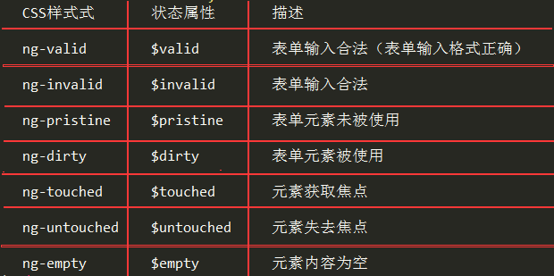

分享人：汪开放
目录
1.背景介绍
2.知识剖析
3.常见问题
4.解决方案
5.编码实战
6.扩展思考
7.参考文献
8.更多讨论
什么是表单验证?
javaScript获取表单标签的值，再判断该值是否为空或者是否和你设定的值的标准相符（比如：输入长度，字符限制等），如果比对有误则进行对用户的 提示（比如弹出窗口）,并且阻止表单提交，反之则提交表单！
表单验证的必要性？
首先，不管有没有表单验证，提交数据到服务器后的，服务器的数据验证都是必须的。 表单验证的意义就在于改善用户的体验，用户不用等到将数据提交到服务器就知道哪些数据是不符合格式的，而且这样也能够减轻应用服务器的压力
ng-pristine ng-valid等自动生成的CSS样式的含义
对于这些CSS样式，AngularJS在作用于中会维护一个状态属性与之对应。
1.是否填写
2.长度限制
3.数据类型
4.模式匹配
//必填
//最小长度为5
//最大长度为20
//邮箱
//验证是否输入为数字
//URL格式
//确保输入的内容匹配到指定的正则表达式
1.有哪些方法可以写表单验证?
主要介绍三大类写法，分别是：js原生写法、各类表单插件的写法、angular js的表单验证写法。
js原生写法主要用到if语句，配合正则表达式。代码量大，验证步骤复杂。
首先需下载插件库：源码
调用插件后，就可以直接使用相应指令进行表单验证，如：message、fields、feedbackIcons
利用ng-show指令，规定满足某些情况时，出现展示信息；用该指令内的$dirty、$valid 、$invalid 、$pristine属性来确定具体的情况
需引用angular-messages.js文件，然后就可以直接用ng-messages. ng-message. 指令进行直接验证和显示
这种方法是代码量最少，验证步骤最直观的，但前提是你所写的页面需要用到angular框架。
1，ng-messages模块支持错误信息的复用，意思就说我们可以把公共的错误提示信息写在一个HTML文件中，然后使用ng-messages-include指令进行引入
基于jquery，bootstrap数据验证插件bootstrapValidator 教程
angularJS入门与进阶（2017年 清华大学出版社 江荣波 著）
1,如何使用angularJS指令自定义验证模式
感谢大家观看
BY : 冯馨雨|汪开放